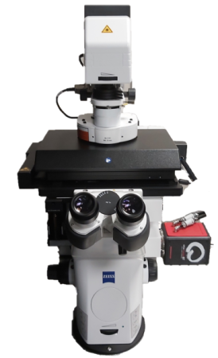

Carl Zeiss Lattice SIM 5 is a structured illumination
microscope offering optically sectioned 3D microscopy
(akin to confocal microscopes) at resolution and speed
surpassing those of standard confocal microscopes. As the microscope is
gentler on live cell than standard confocal microscopes, it is well
suited for long-term live cell imaging.
For this reason the microscope is equipped with a stage-top incubator
and hardware autofocus. It is certified as Class 1 laser device, so no
N3
license is needed for its operation!
Available techniques:
- 3-dimensional optically sectioned imaging
- Super-resolution structured illumination microscopy
(lateral resolution up to 60 nm with 63x objective; 285 nm/550 nm
lateral/axial resolution with 20x objective)
- Long-term live-cell imaging (with temperature and CO2
control)
Objectives:
- EC Plan-Neofluar 5x/0.16 dry, FWD 18.5 mm, CG 0.17 mm
- EC Plan-Neofluar 10x/0.3 dry, FWD 5.2 mm, CG 0.17 mm
- Plan Apochromat 20x/0.8 dry, FWD 0.55 mm, CG 0.17 mm
- C-Apochromat 40x/1.2 water, FWD 0.28 mm (for 0.17 mm CG),
CG 0.13-0.20 mm
- Plan Apochromat 63x/1.4 oil, FWD 0.19 mm, CG 0.17 mm
[FWD = free working distance, CG = cover glass]
Excitation laser lines:
- 405 nm
- 488 nm
- 561 nm
- 640 nm
Fluorescence filter sets:
- Dichroic: 405/488/561/642;
Emission Filters:
- 419-470 nm
- 503-546 nm
- 576-617 nm
- 657-800 nm
- Dichroic: 405/488/642;
Emission Filters:
- 419-470 nm
- 503-546 nm
- 657-800 nm
- Dichroic: 488/561;
Emission Filters:
- Dichroic: 405/642;
Emission Filters:
Detectors and cameras:
- Hamamatsu Orca-Fusion BT sCMOS (2304x2304 pixels, effective
1304x1304 pixels, 6.5 µm/pixel)
Software:
Other features:
- Motorised stage
- Motorised focus drive
- Z-piezo stage (for faster stack acquisition)
- Stage-top incubator (temperature, CO2 concentration and
humidity control) with adapters for a variety of sample carriers
- Automatic immersion dispenser for water immersion lenses
- Hardware autofocus
- AI Sample Finder
- Additional workstation for real-time image processing
| Usage
fees [SGD/hour]: |
LKCMed |
NTU |
Others (Academia/Industry) |
| 35* |
55 |
65 / 104 |
| Location |
EMB 07-07-01,
Imaging room (apply for card access) |
| Contact |
nobic.facilities@e.ntu.edu.sg |
*Reduced rates apply:
- off-peak hours (weekends,
public holidays and 18.00 - 8.30 on weekdays): 70% of
the
rate stated in the table
- 30% of the prevailing rate
applicable after 10 hours of booking/usage
- 30% of the prevailing rate
(that is already the discounted rate in this case) applicable after
24
hours of booking/usage.
BACK TO TOP